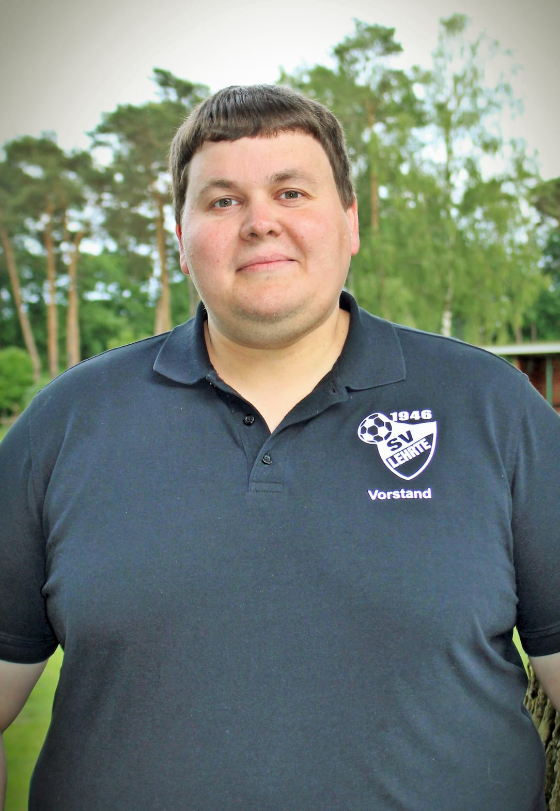
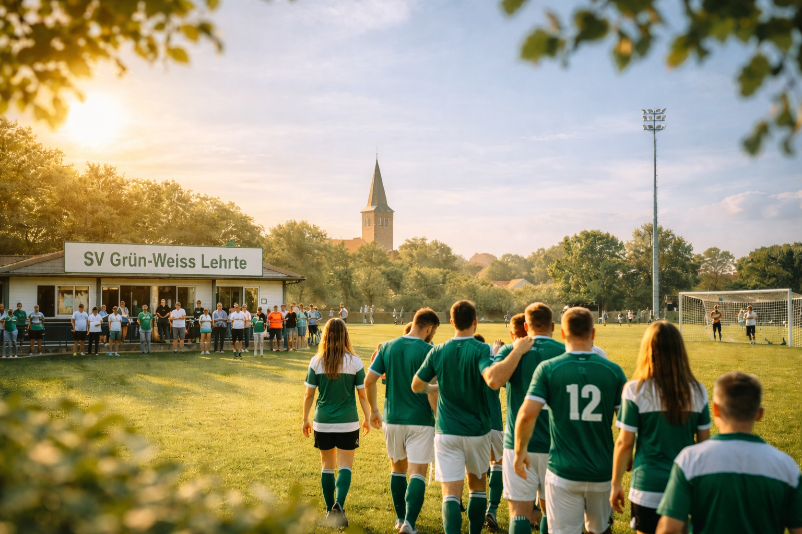
Der Verein
Gemeinschaft.
Gemeinschaft.
Seit 1946.
Mehr als nur Sport. Ein Zuhause für Lehrte.
Unsere DNA
Tradition trifft Moderne.
Seit über 75 Jahren bewegt der SV Grün-Weiß Lehrte Menschen. Was als kleine Fußballgemeinschaft begann, ist heute ein moderner Breitensportverein. Wir verbinden Generationen, fördern Talente und bieten einen Ort, an dem Sport und Geselligkeit Hand in Hand gehen.
Unser Vereinsleben
Der Verein in Bildern
Momente vom Platz, aus dem Vereinsheim und aus dem Alltag unseres Vereins. Echt. Nahbar. Grün-Weiß.
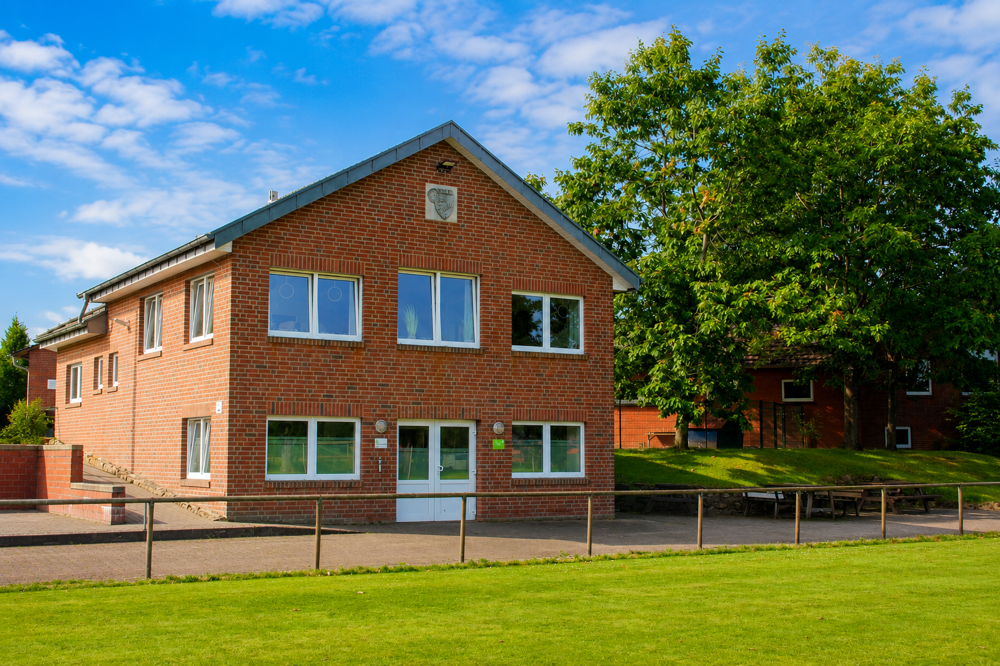
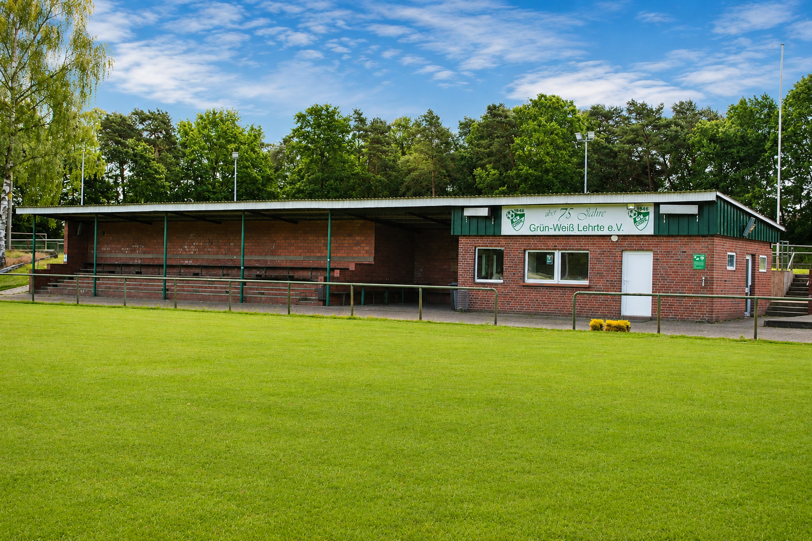
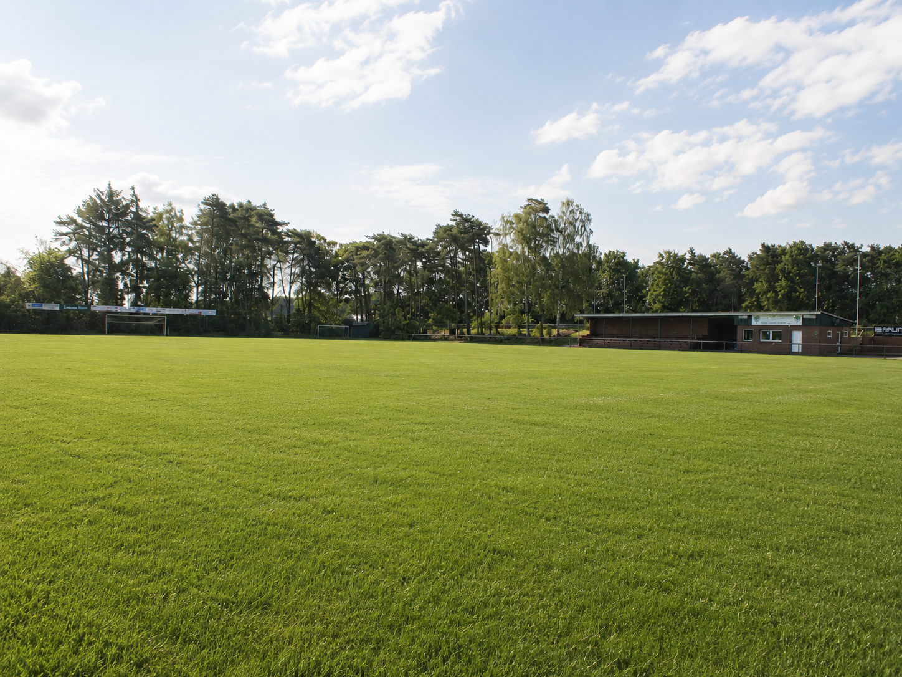
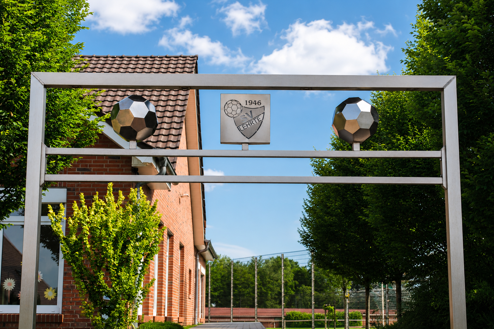
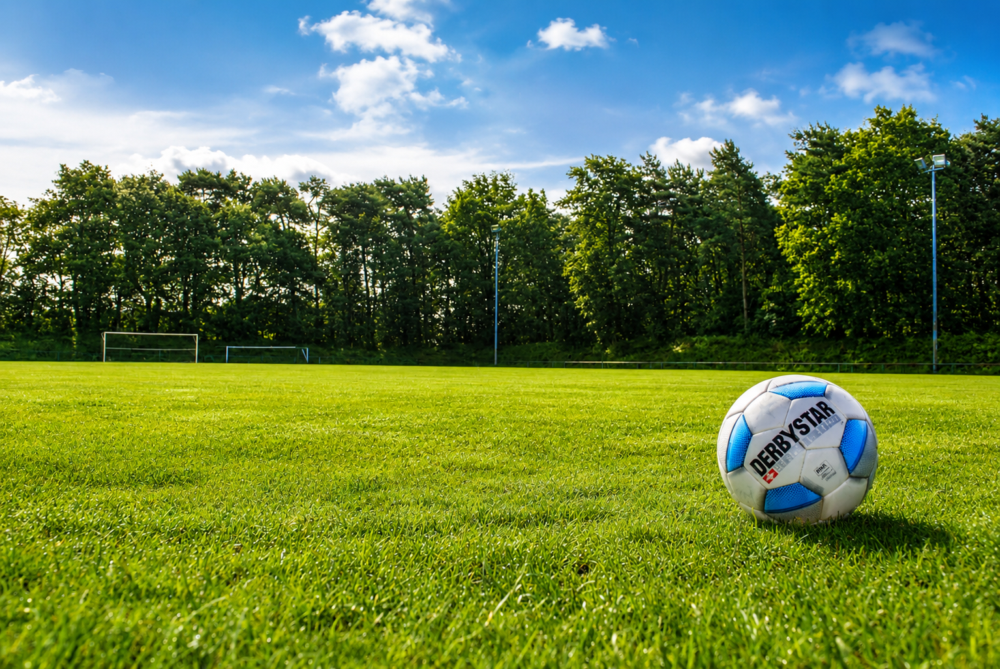
0
Mitglieder
0
Sparten
0
Ehrenamtliche
Das Team
Der Vorstand
13 Köpfe, ein Ziel: Gemeinsam bewegen wir den Verein.
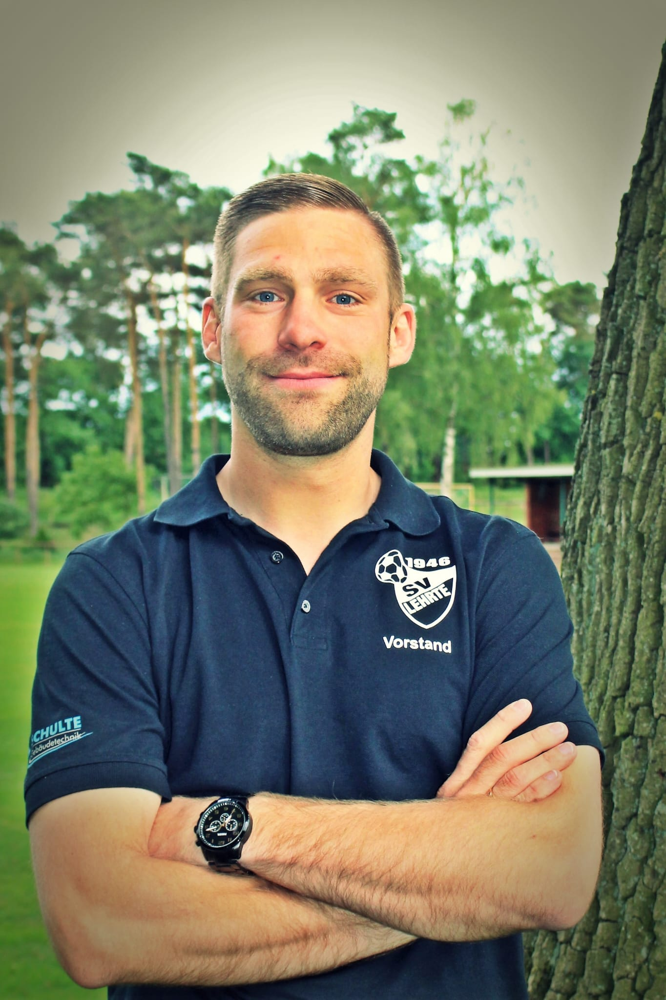
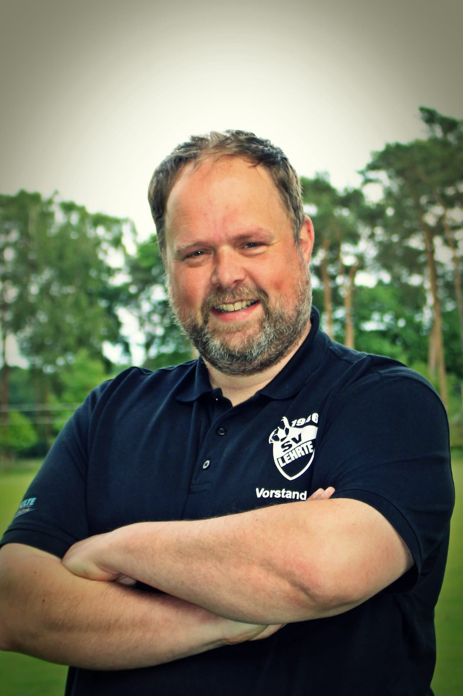
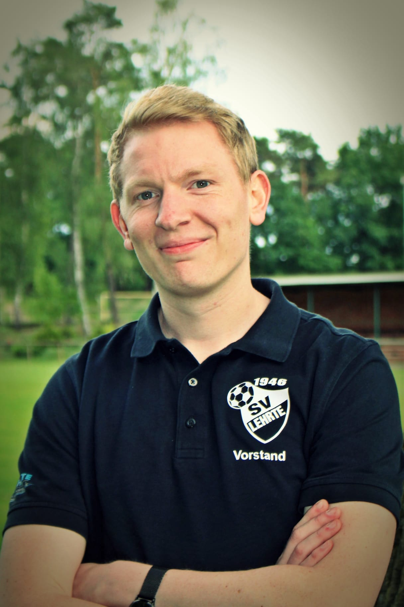
Peter Wilbers
Erweiterter Vorstand Im erweiterten Vorstand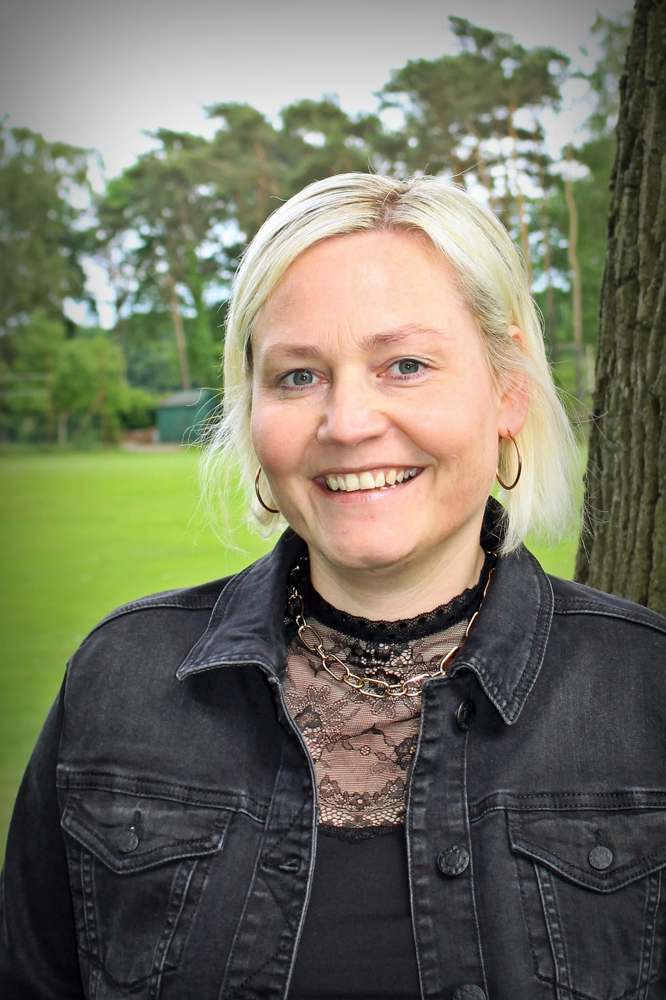
Maria Hilling
Erweiterter Vorstand Im erweiterten Vorstand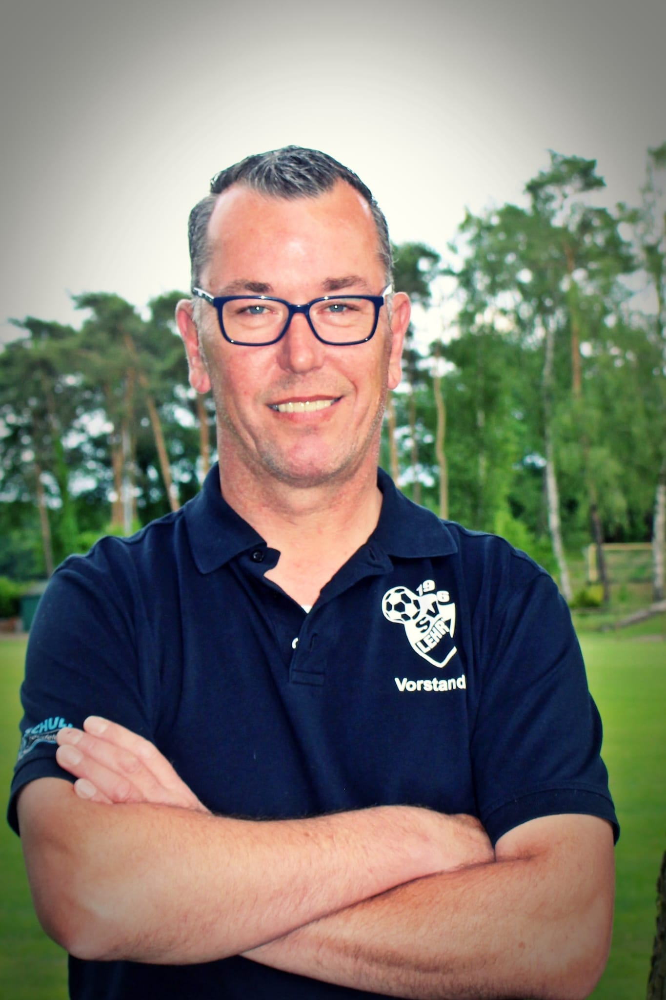
Michael Lake
Erweiterter Vorstand Im erweiterten Vorstand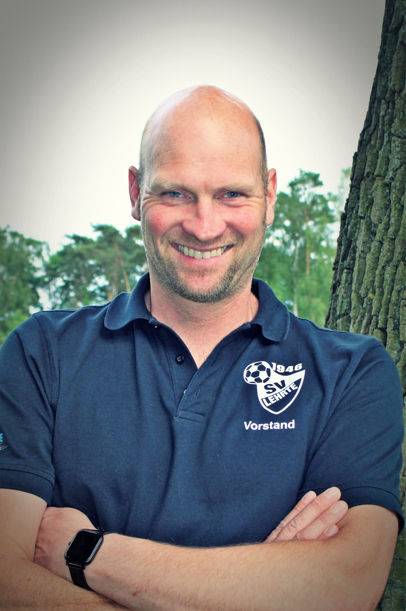
Matthias Schwerdt
Erweiterter Vorstand Im erweiterten VorstandBianca Schnieders
Erweiterter Vorstand Im erweiterten VorstandMaike Günnemann
Erweiterter Vorstand Im erweiterten VorstandBenjamin Bange
Erweiterter Vorstand Im erweiterten Vorstand
Service